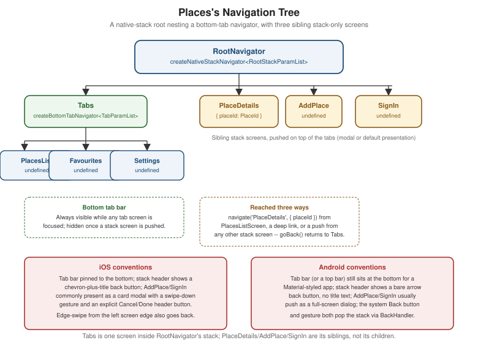

Navigation
|
This content was generated with the assistance of AI and should be verified against the official documentation before being relied on in production. |
Accessibility covered making a single screen usable with assistive
technology; this page covers moving between screens. So far every Places screen sketched in this section — the place list, place details, the add-place form — has been a standalone component with no way to reach the
others. This page wires them together with React Navigation 7, replaces App.tsx’s placeholder from
Getting Started with React Native with a real `RootNavigator, and
then shows the same screen tree expressed as Expo Router files, the file-based alternative Places does not
otherwise use in this section.
Mobile Navigation Patterns and Platform Conventions
Four shapes cover almost every mobile navigation need, and React Navigation (or Expo Router, which is built on top of it) names a dedicated navigator for each:
-
Stack. Screens pushed on top of one another, each new screen sliding in over the last, with a back button/gesture to pop back to the previous one — Places's own
PlaceDetails, reached by pushing on top of the list, is a stack push. A stack is the default shape for any "drill down, then come back" flow. -
Tabs. A fixed set of top-level destinations, all one gesture apart, with a persistent bar (bottom tab bar on mobile, occasionally a top tab bar) showing which one is active — Places's
PlacesList,Favourites, andSettingstabs. Unlike a stack, switching tabs does not "go back" to anything; each tab keeps its own navigation state independently. -
Drawer. A panel that slides in from the side (usually the left) over the current screen, typically revealed by an edge swipe or a header icon — a good fit once a tab bar’s fixed slot count stops being enough (five, six, or more top-level sections), at the cost of hiding the destination list behind an extra gesture that a tab bar does not.
-
Modal. A screen presented over the current one rather than alongside it — interrupting the current flow for a focused, self-contained task (a form, a confirmation, a picker) that the user either completes or dismisses before returning to exactly where they left off. Places's
AddPlaceandSignInscreens are both natural modal candidates, shown as such below.
iOS vs. Android Conventions
React Navigation’s native-stack and bottom-tab navigators already render each platform’s own look by default, but the underlying conventions are worth knowing before overriding anything:
| Aspect | iOS | Android |
|---|---|---|
Stack header back button |
A chevron plus the previous screen’s title (or "Back" once the title would not fit), tappable and also reachable via an edge-swipe gesture from the left screen edge. |
A bare arrow icon with no title text, following Material Design; the system Back button/gesture also pops the
stack, handled through |
Tab bar placement |
Always at the bottom, translucent by default, sitting above the home indicator. |
Conventionally still at the bottom for a mobile app (Material’s own top-tab pattern exists but is far less common for a primary navigation surface), opaque by default. |
Modal presentation |
A "card" that slides up and, since iOS 13, only covers most of the screen — revealing a sliver of the presenting screen behind it — dismissible by a downward swipe unless disabled. |
Presented full-screen, no swipe-to-dismiss by default; a header Close/Cancel action or the system Back button/gesture is the expected way out. |
Swipe-back gesture |
Built in on every stack screen unless explicitly disabled ( |
Not a platform convention — Android users rely on the system Back button/gesture instead, which React Navigation’s native stack already wires up for a normal stack pop. |
None of this needs a Platform.OS branch in Places's own code — createNativeStackNavigator and
createBottomTabNavigator, below, already render each platform’s native header/tab-bar chrome without a single
if statement, the same "different yet the same" idea
Getting Started with React Native introduced for Core Components in
general.
React Navigation 7: the Static Configuration API
React Navigation 7 introduced a static configuration API as the default way to describe a navigator: instead
of a NavigationContainer wrapping a tree of <Stack.Navigator>/<Stack.Screen> JSX (still supported as the
dynamic API, useful when a screen list must be computed at runtime), a plain configuration object declares the
whole tree, and createStaticNavigation turns it into the root component:
import { createNativeStackNavigator } from '@react-navigation/native-stack';
import { createStaticNavigation } from '@react-navigation/native';
import type { StaticParamList } from '@react-navigation/native';
const RootStack = createNativeStackNavigator({
screens: {
Home: HomeScreen,
Details: DetailsScreen,
},
});
type RootStackParamList = StaticParamList<typeof RootStack>;
const Navigation = createStaticNavigation(RootStack);
export default function App() {
return <Navigation />;
}StaticParamList<typeof RootStack> derives a screen-name-to-params type map straight from the configuration
object itself, so the param list and the navigator can never drift apart the way two hand-written, independently
maintained declarations could. Places's own RootStackParamList/TabParamList (below) are written out
explicitly instead, matching the canonical shapes established on
Getting Started with React Native verbatim — StaticParamList is
still the type actually consumed at the call sites that need it (useNavigation<NativeStackNavigationProp<RootStackParamList>>(),
for instance), it is simply spelled out by hand here rather than derived, so this page’s types stay
byte-for-byte identical to every other page in this section that references them.
Headers and Header Buttons
Each screen’s header is configured via options, either statically per screen or dynamically from a component
using useNavigation/useRoute:
const RootStack = createNativeStackNavigator({
screens: {
PlaceDetails: {
screen: PlaceDetailsScreen,
options: ({ route }) => ({
title: 'Place Details',
headerRight: () => <EditPlaceButton placeId={route.params.placeId} />,
}),
},
},
});headerRight/headerLeft each take a function returning arbitrary JSX rendered into the native header bar — EditPlaceButton above reads route.params.placeId (typed through RootStackParamList, below) rather than a
prop, since the header itself is rendered by the navigator, not by PlaceDetailsScreen. Inside a screen
component instead of options, useNavigation() and useRoute() give the same access imperatively:
import { useNavigation, useRoute } from '@react-navigation/native';
import type { NativeStackNavigationProp } from '@react-navigation/native-stack';
import type { RouteProp } from '@react-navigation/native';
function PlaceDetailsScreen() {
const navigation = useNavigation<NativeStackNavigationProp<RootStackParamList, 'PlaceDetails'>>();
const route = useRoute<RouteProp<RootStackParamList, 'PlaceDetails'>>();
const { placeId } = route.params; // typed as PlaceId, never `any`
// ...
}Bottom Tabs and Drawer
createBottomTabNavigator and createDrawerNavigator follow the identical static-configuration shape as the
stack navigator above — a screens map plus per-screen or per-navigator options — which is what makes
nesting one inside another (next) a matter of pointing a stack screen at a tab (or drawer) navigator instead of
at a plain component:
import { createBottomTabNavigator } from '@react-navigation/bottom-tabs';
const Tabs = createBottomTabNavigator({
screens: {
PlacesList: { screen: PlacesListScreen, options: { title: 'Places' } },
Favourites: { screen: FavouritesScreen, options: { title: 'Favourites' } },
Settings: { screen: SettingsScreen },
},
});import { createDrawerNavigator } from '@react-navigation/drawer';
const Drawer = createDrawerNavigator({
screens: {
PlacesList: PlacesListScreen,
Favourites: FavouritesScreen,
Settings: SettingsScreen,
},
});Places uses bottom tabs, not a drawer, for exactly the three destinations shown — a drawer earns its place once a tab bar’s fixed slot count genuinely runs out, per the pattern comparison above, which three destinations does not.
Nesting Navigators
A tab (or drawer) navigator becomes one screen inside a stack navigator simply by naming it as that screen’s component — the tab bar then only appears while a tab screen is focused, and disappears once the stack pushes a sibling screen on top:
const RootStack = createNativeStackNavigator({
screens: {
Tabs: { screen: Tabs, options: { headerShown: false } }, // the bottom-tab navigator itself
PlaceDetails: PlaceDetailsScreen,
},
});headerShown: false on the Tabs screen avoids a double header — one from the outer stack, one from whichever
tab screen owns its own — since each tab screen already renders inside the same stack and can supply its own
header via its own options.
navigate vs. push vs. goBack
-
navigation.navigate('PlaceDetails', { placeId })goes to a screen if it is not already the top of the stack — ifPlaceDetailsfor a differentplaceIdis already on top,navigateupdates its params in place rather than pushing a second copy. This is almost always the right default for reaching a screen from a menu, a tab, or a list. -
navigation.push('PlaceDetails', { placeId })always pushes a new instance, even if one for the same route already sits on top — the right call when the same screen legitimately needs to appear more than once in the stack, e.g.PlaceDetailslinking to another place’sPlaceDetailsfrom within its own content. -
navigation.goBack()pops the current screen off the stack, returning to whatever was beneath it;navigation.canGoBack()guards a back button that might otherwise be shown with nothing to go back to (a deep-linked screen opened with an empty stack beneath it, for instance).
Expo Router: Navigation as File Structure
Expo Router builds on top of React Navigation and expresses the exact same tree as a file tree under app/
instead of a configuration object: a file’s path is its route, and a special _layout.tsx file at each level
declares which navigator wraps the files beside and beneath it. Restructured as Expo Router files, Places's
own screen tree (identical destinations, same params, same behavior) looks like this:
app/
_layout.tsx # root Stack: wraps (tabs), plus PlaceDetails/AddPlace/SignIn as sibling routes
(tabs)/
_layout.tsx # Tabs: bottom-tab navigator
index.tsx # PlacesList (route: /)
favourites.tsx # Favourites (route: /favourites)
settings.tsx # Settings (route: /settings)
place/
[placeId].tsx # PlaceDetails (route: /place/42), dynamic segment
add-place.tsx # AddPlace (route: /add-place)
sign-in.tsx # SignIn (route: /sign-in)A (tabs) folder name in parentheses is a route group — it organizes files and supplies the _layout.tsx
that wraps them, without itself appearing as a path segment, so (tabs)/index.tsx is still just /, not
/(tabs)/. [placeId].tsx is a dynamic segment — the square brackets bind whatever the URL supplies at
that position to a route parameter, PlaceDetails’s `placeId, read back with Expo Router’s own useLocalSearchParams:
// app/(tabs)/_layout.tsx
import { Tabs } from 'expo-router';
export default function TabsLayout() {
return (
<Tabs>
<Tabs.Screen name="index" options={{ title: 'Places' }} />
<Tabs.Screen name="favourites" options={{ title: 'Favourites' }} />
<Tabs.Screen name="settings" options={{ title: 'Settings' }} />
</Tabs>
);
}// app/(tabs)/index.tsx
import { useRouter } from 'expo-router';
import { PlacesListScreen } from '../../src/features/places/screens/PlacesListScreen';
export default function PlacesListRoute() {
const router = useRouter();
return <PlacesListScreen onSelectPlace={(placeId) => router.navigate(`/place/${placeId}`)} />;
}// app/place/[placeId].tsx
import { useLocalSearchParams } from 'expo-router';
import { PlaceDetailsScreen } from '../../src/features/places/screens/PlaceDetailsScreen';
import type { PlaceId } from '../../src/features/places/types';
export default function PlaceDetailsRoute() {
const { placeId } = useLocalSearchParams<{ placeId: PlaceId }>();
return <PlaceDetailsScreen placeId={placeId} />;
}Each route file above stays a thin wrapper delegating straight into the same src/features/places/screens/
components *Places already writes the rest of its logic in — Expo Router decides how a screen is reached, it
never replaces the screen component itself.
Link and Imperative Navigation
Link is Expo Router’s declarative navigation primitive — an anchor-like component wrapping any pressable
content — with router.navigate/router.push/router.back as its imperative equivalents (mirroring
navigate/push/goBack above) for navigating from inside an event handler rather than JSX:
import { Link, useRouter } from 'expo-router';
function PlaceCard({ place }: { place: Place }) {
return (
<Link href={`/place/${place.id}`} asChild>
<Pressable>
<Text>{place.name}</Text>
</Pressable>
</Link>
);
}
function AddPlaceButton() {
const router = useRouter();
return <Pressable onPress={() => router.push('/add-place')}><Text>Add a place</Text></Pressable>;
}Typed Routes
With experiments.typedRoutes enabled in app.json, Expo Router generates route types from the app/ file
tree itself at build/dev-server time, so router.navigate('/place/42') and <Link href="/place/42"> are checked
against the routes that actually exist — a typo’d or removed path is a TypeScript error rather than a runtime
"screen not found", the file-based-routing equivalent of RootStackParamList catching the same mistake in the
static-configuration style above.
Deep Links and Universal/App Links
A deep link opens the app directly to a specific screen from outside it — a custom URL scheme
(places://place/42), a universal link (iOS, an https:// URL bound to the app via an associated domain),
or an app link (Android’s equivalent, verified via assetlinks.json). Expo Router wires its own file-based
routes to incoming links automatically; built on plain React Navigation instead, the same URL is handled with
the Linking module directly:
import { Linking } from 'react-native';
import { useEffect } from 'react';
import { useNavigation } from '@react-navigation/native';
import type { NativeStackNavigationProp } from '@react-navigation/native-stack';
function useDeepLinkToPlaceDetails() {
const navigation = useNavigation<NativeStackNavigationProp<RootStackParamList>>();
useEffect(() => {
const openFromUrl = (url: string) => {
const placeId = new URL(url).pathname.split('/').pop();
if (placeId) {
navigation.navigate('PlaceDetails', { placeId });
}
};
Linking.getInitialURL().then((url) => url && openFromUrl(url)); // app opened cold, from a link
const subscription = Linking.addEventListener('url', ({ url }) => openFromUrl(url)); // already running
return () => subscription.remove();
}, [navigation]);
}Linking.getInitialURL() covers the app being launched by the link (cold start); the 'url' event covers the
link arriving while Places is already running in the foreground or background — both are needed together
because neither alone covers both cases. Linking.openURL(url) is the reverse direction, opening an external
URL (or another app’s registered scheme) from inside Places.
Android Hardware Back with BackHandler
Android’s system Back button/gesture pops the navigation stack by default with no code required, but a screen
that needs to intercept it first — confirming discard on AddPlace before actually leaving, for instance — subscribes to BackHandler directly:
import { BackHandler } from 'react-native';
import { useEffect } from 'react';
function useConfirmDiscardOnBack(hasUnsavedChanges: boolean, confirmDiscard: () => void) {
useEffect(() => {
const subscription = BackHandler.addEventListener('hardwareBackPress', () => {
if (hasUnsavedChanges) {
confirmDiscard();
return true; // handled: block the default pop
}
return false; // not handled: let the default back behavior proceed
});
return () => subscription.remove();
}, [hasUnsavedChanges, confirmDiscard]);
}Returning true from the handler tells the OS the press was handled and to stop there; returning false lets
the event fall through to whatever would otherwise happen — the stack popping, or the app backgrounding from
its root screen.
A Native Alternative: react-native-navigation
react-native-navigation (Wix’s navigation library) takes a fundamentally different approach from everything
above: each screen is a real native view controller/fragment managed by native code, with the JS side only
describing which native screens exist, rather than React Navigation’s own JS-driven navigator rendering
transitions itself. It is worth knowing the name exists — some teams choose it specifically for native-feeling
transition performance — but Places has no reason to reach for it, and this section does not cover it
further.
Places: the Navigation Tree, Built Both Ways

React Navigation 7 (the Canonical Style)
src/navigation/RootNavigator.tsx wires the exact RootStackParamList/TabParamList shapes established on
Getting Started with React Native: a bottom-tab navigator (Tabs)
nested as one screen inside the native-stack root, alongside PlaceDetails, AddPlace, and SignIn as sibling
stack screens:
// src/navigation/RootNavigator.tsx
import { createNativeStackNavigator } from '@react-navigation/native-stack';
import { createBottomTabNavigator } from '@react-navigation/bottom-tabs';
import { createStaticNavigation } from '@react-navigation/native';
import { PlacesListScreen } from '../features/places/screens/PlacesListScreen';
import { FavouritesScreen } from '../features/places/screens/FavouritesScreen';
import { SettingsScreen } from '../features/settings/SettingsScreen';
import { PlaceDetailsScreen } from '../features/places/screens/PlaceDetailsScreen';
import { AddPlaceScreen } from '../features/places/screens/AddPlaceScreen';
import { SignInScreen } from '../features/auth/SignInScreen';
import type { PlaceId } from '../features/places/types';
export type RootStackParamList = {
Tabs: undefined;
PlaceDetails: { placeId: PlaceId };
AddPlace: undefined;
SignIn: undefined;
};
export type TabParamList = {
PlacesList: undefined;
Favourites: undefined;
Settings: undefined;
};
// The static config below infers its own screen-to-params shape from these components; TabParamList and
// RootStackParamList are declared by hand above so this file's types stay byte-for-byte identical to the
// canonical shapes every other page in this section imports, rather than round-tripped through StaticParamList.
const Tabs = createBottomTabNavigator({
screens: {
PlacesList: { screen: PlacesListScreen, options: { title: 'Places' } },
Favourites: { screen: FavouritesScreen, options: { title: 'Favourites' } },
Settings: { screen: SettingsScreen },
},
});
const RootStack = createNativeStackNavigator({
screens: {
Tabs: { screen: Tabs, options: { headerShown: false } },
PlaceDetails: {
screen: PlaceDetailsScreen,
options: { title: 'Place Details' },
},
AddPlace: {
screen: AddPlaceScreen,
options: { presentation: 'modal', title: 'Add a Place' },
},
SignIn: {
screen: SignInScreen,
options: { presentation: 'modal', headerShown: false },
},
},
});
export const RootNavigation = createStaticNavigation(RootStack);// src/app/App.tsx (excerpt -- replaces the placeholder from Getting Started with React Native)
import { RootNavigation } from '../navigation/RootNavigator';
import { ThemeProvider } from '../theme/ThemeProvider';
export default function App() {
return (
<ThemeProvider>
<RootNavigation />
</ThemeProvider>
);
}options: { presentation: 'modal' } on AddPlace and SignIn is what makes both slide up as a card over the
tabs rather than push in from the side, matching the modal pattern chosen for them at the top of this page;
PlaceDetails keeps the default push presentation, since drilling into a specific place is exactly the
"go deeper, then come back" flow a stack push is for. From PlacesListScreen, reaching a place’s details is then
just:
// src/features/places/screens/PlacesListScreen.tsx (excerpt)
const navigation = useNavigation<NativeStackNavigationProp<RootStackParamList>>();
<PlaceCard place={place} onPress={(placeId) => navigation.navigate('PlaceDetails', { placeId })} />The Same Tree as Expo Router Files
Restructured as Expo Router routes, (tabs) groups the three bottom-tab screens under one _layout.tsx, and
PlaceDetails, AddPlace, and SignIn become sibling files beside it, closing the loop with the file tree
shown earlier in this page:
app/
_layout.tsx # RootStack: (tabs) + PlaceDetails/AddPlace/SignIn
(tabs)/
_layout.tsx # Tabs: bottom-tab navigator
index.tsx # PlacesList
favourites.tsx
settings.tsx
place/
[placeId].tsx # PlaceDetails -- dynamic segment carries placeId
add-place.tsx # AddPlace -- presented as a modal via Stack.Screen options
sign-in.tsx # SignIn -- presented as a modal via Stack.Screen options// app/_layout.tsx
import { Stack } from 'expo-router';
export default function RootLayout() {
return (
<Stack>
<Stack.Screen name="(tabs)" options={{ headerShown: false }} />
<Stack.Screen name="place/[placeId]" options={{ title: 'Place Details' }} />
<Stack.Screen name="add-place" options={{ presentation: 'modal', title: 'Add a Place' }} />
<Stack.Screen name="sign-in" options={{ presentation: 'modal', headerShown: false }} />
</Stack>
);
}Every option here — headerShown, presentation: 'modal', title — is the identical prop passed to the
identical navigator underneath; Expo Router only changes where the configuration lives (a _layout.tsx file
per folder) and how a screen is reached (a URL path instead of a screen name).
Deep Link Opening PlaceDetails
The sequence below traces a universal link (https://places.app/place/42) opening straight to PlaceDetails
for that place, whether Places was already running or launched fresh by the tap: